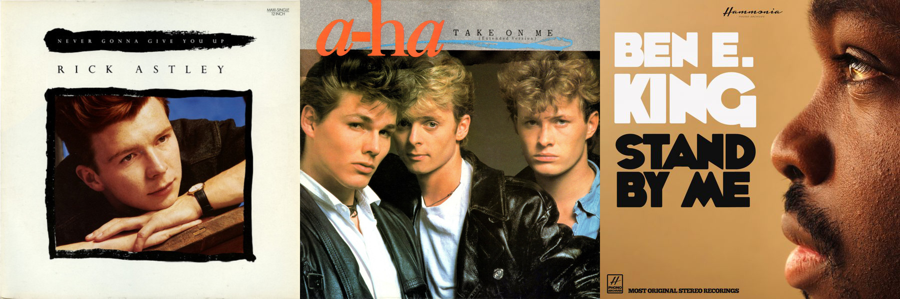

Favorite Music & Movies
Favorite Music:
From left to right: Rick Astley's Never Gonna Give You Up (1987), a-ha's Take on Me (1985), Ben E. King's Stand By Me (1961).
I am a huge fan of music and my preferences varies from different genres. I listen to modern pop music, rock, EDMs, classics, indie music, movie soundtracks, game soundtracks and even Japanese music. It is very hard to pick a "most" favorite music but if someone ask me I always prefer to say some old but gold music as they were very good and stand the test of time.
Favorite Movies:

From left to right: Spider-Man 2 (2004), Edge Of Tomorrow (2014) Kingsman: The Secret Service (2015), Your Name (Kimi No Na Wa)(2016).
I'm also a huge fan of movies and if I am hype for an upcoming release, I want to watch them at cinema first hand if possible, there is a fulfilling feeling witnessing a masterpiece on the big screen. There are a lot of good movies out there and we obviously have our own preferences but my choices have a sentimental value to me and they are really good in my opinion.